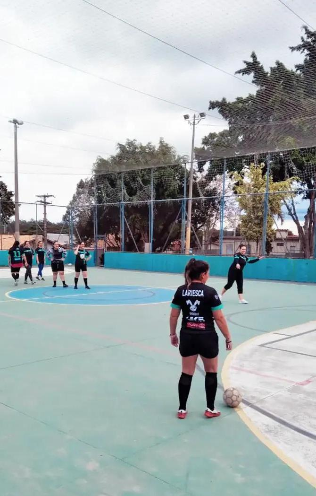

Futebol e Missões
Tour Chicago Eagles
Seja um parceiro e apoie minha participação em uma missão que une futebol, fé e evangelismo.
Período
04 a 16 de junho
Localização
São Paulo
Meta de arrecadação
R$ 2.000,00
Sua oferta ajuda a viabilizar inscrição, alimentação e hospedagem nessa jornada missionária e esportiva.
Ore, compartilhe, contribua e faça parte desta missão.

Sobre a participante
Lariesca Aquino
Lariesca Aquino está se preparando para participar da Tour Chicago Eagles, uma experiência missionária e esportiva que une futebol, evangelismo e serviço cristão.
Seu desejo é usar os talentos recebidos por Deus no esporte como instrumento para compartilhar a mensagem de Jesus e impactar vidas por meio de relacionamentos, testemunho e serviço.
Sobre o projeto
Uma missão com propósito dentro e fora das quadras
Este projeto tem como finalidade viabilizar minha participação na Tour Chicago Eagles, uma experiência missionária e esportiva que acontecerá de 04 a 16 de junho, passando por diferentes cidades do estado de São Paulo.
Durante esse período, a equipe ficará hospedada em Atibaia, no acampamento Palavra da Vida, que servirá como base para preparação, treinamentos, convivência da equipe e deslocamento para as atividades programadas.
Quem são os Chicago Eagles?
Futebol como ferramenta de transformação
O time Chicago Eagles é uma organização cristã sem fins lucrativos que utiliza o futebol como ferramenta para impactar vidas, especialmente entre jovens e crianças.
A organização faz parte da Missionary Athletes International (MAI), instituição que desenvolve projetos missionários por meio do esporte em diferentes países.
Seu trabalho é direcionado ao evangelismo, discipulado e transformação social através do esporte.
Propósito e impacto
Por que este projeto é importante?
Esta não é apenas uma viagem esportiva. É uma missão com propósito espiritual, relacional e evangelístico.
Evangelização através do esporte
Usar o futebol como ponte para anunciar esperança e fé.
Princípios cristãos em movimento
Compartilhar valores do evangelho por meio da convivência e do testemunho.
Crescimento pessoal e ministerial
Desenvolver habilidades espirituais, emocionais e relacionais.
Serviço por meio de relacionamentos
Servir pessoas com presença, escuta, cuidado e compaixão.
Esperança que alcança vidas
Levar esperança, valores cristãos e a mensagem do evangelho.
Meta de arrecadação
Investimento para tornar essa missão possível
O valor arrecadado será destinado à inscrição, alimentação e hospedagem, com meta total de R$ 2.000,00.
Contribua para essa missão
Contribua via PIX com praticidade
Sua contribuição ajudará diretamente a viabilizar essa participação missionária e esportiva. Cada apoio recebido faz parte dessa missão.
Chave PIX
lariefut@gmail.com
Escaneie o QR Code ou use a chave PIX acima para contribuir.
Como você pode ajudar
Três formas de fazer parte desta missão
Ore
Interceda por esse projeto, pela equipe e pelas vidas que serão alcançadas.
Compartilhe
Envie esta página para amigos, familiares e pessoas que desejam apoiar uma causa com propósito.
Contribua
Toda oferta ajuda a transformar essa oportunidade em realidade.
Galeria
Uma jornada marcada por esporte, dedicação e propósito


Faça parte desta missão
Onde o esporte abre portas, o evangelho transforma corações.
Ao contribuir com este projeto, você se torna parte de uma missão que une fé, esporte e transformação de vidas.